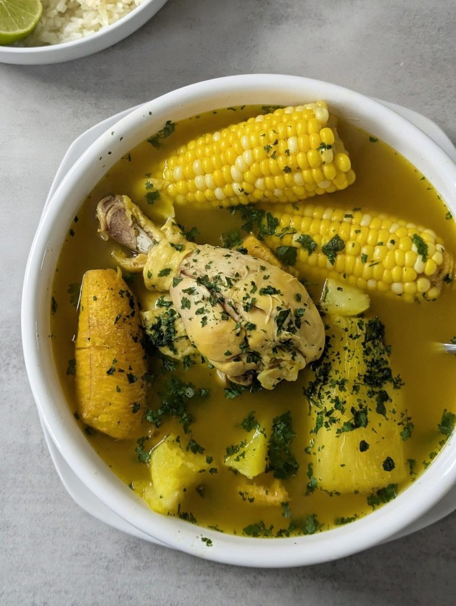
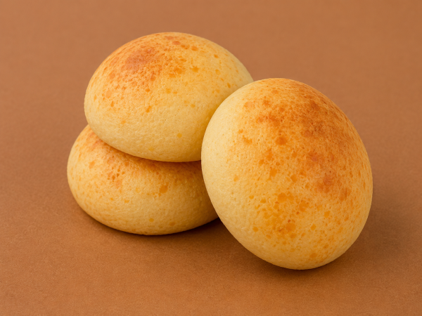
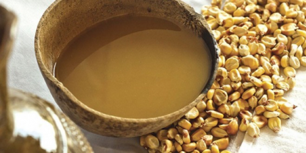

Sancocho de Gallina Criolla
Sopa tradicional cocinada en fogón de leña con tubérculos locales, mazorca fresca y especias de la región.
Explora la gastronomía criolla y las recetas ancestrales preparadas con ingredientes de la sabana cundiboyacense.

Sopa tradicional cocinada en fogón de leña con tubérculos locales, mazorca fresca y especias de la región.

Aparejos horneados a base de harina de maíz y cuajada fresca, acompañamiento ideal para la chicha o el chocolate.

Bebida fermentada tradicional a base de maíz amarillo y panela, referente cultural de la herencia Muisca.